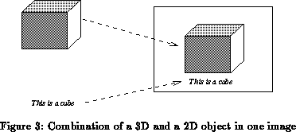

Previous: Combination Objects
Up: Combination Objects
Next: Structuring.
Previous Page: Combination Objects
Next Page: Structuring.
Previous: Combination Objects
Up: Combination Objects
Next: Structuring.
Previous Page: Combination Objects
Next Page: Structuring.
Some of the media objects produce images on the screen. This is the case for 2D and 3D graphics, and for video objects. It is also possible to import and to export digital images in various formats ( TIFF, GIF, etc.). A natural consequence of this is the requirement for an application to combine these images directly. For example, one may want to create a complex picture by using a snapshot of a video sequence, annotated with a generated (2D) text, filtered through a pattern read from a TIFF image, etc.

To achieve this functionality, MADE defines a special image object, which can be used as a common platform for the combination of pictures. 2D and 3D objects can produce such images, they can be generated from various image file formats, and individual frames of video sequences may be converted into images. These images may then be visualized on the screen, or can be converted back into video frames. In the future, complex image processing functions will be defined to operate on these images, combining them, filtering them, etc. Here again, due to the object oriented design, it will be possible for the end--user to add their own application dependent image processing functionalities.